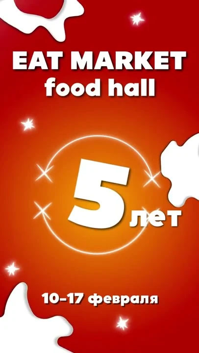
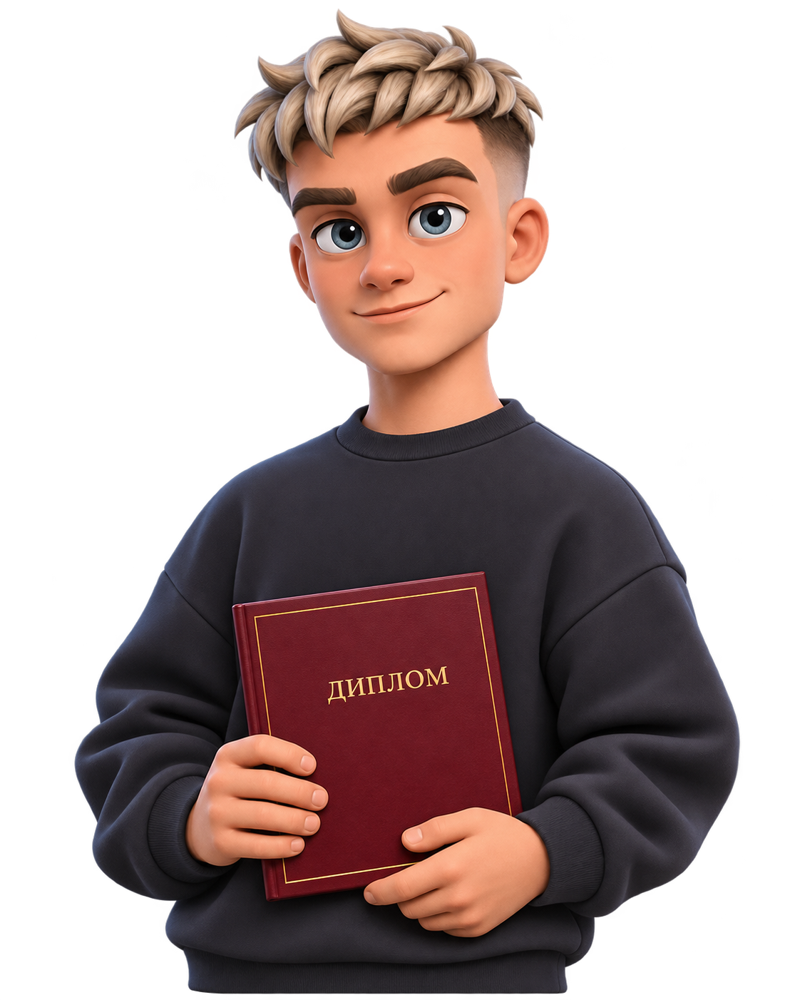
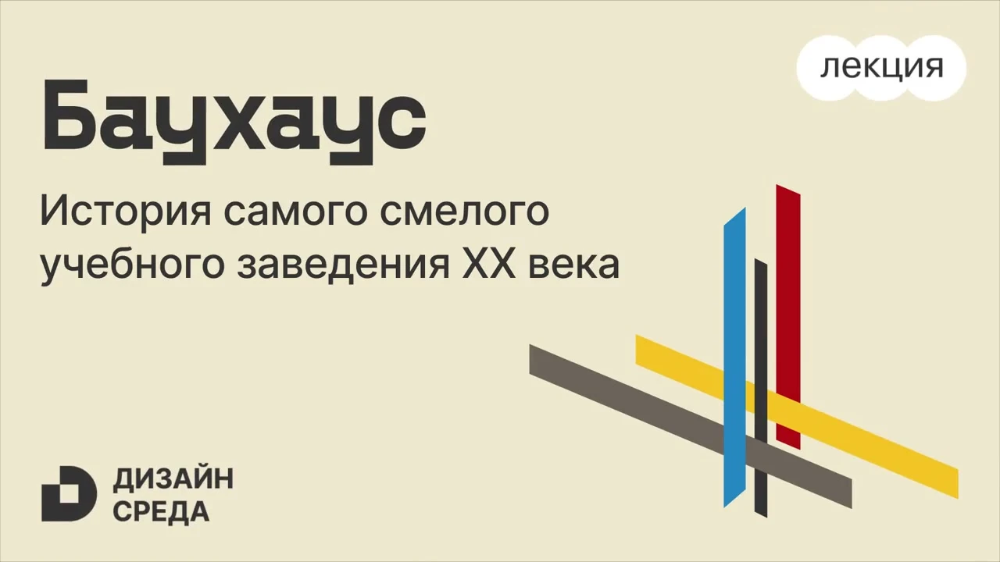
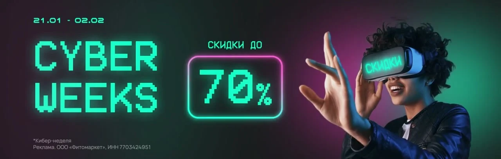
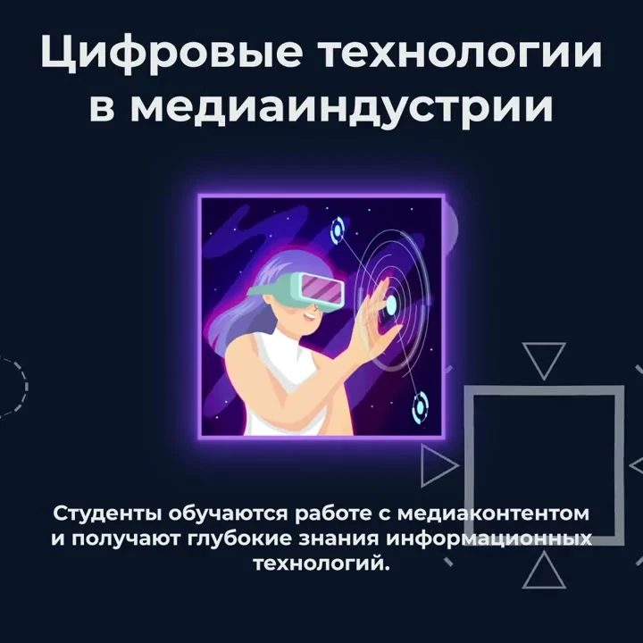
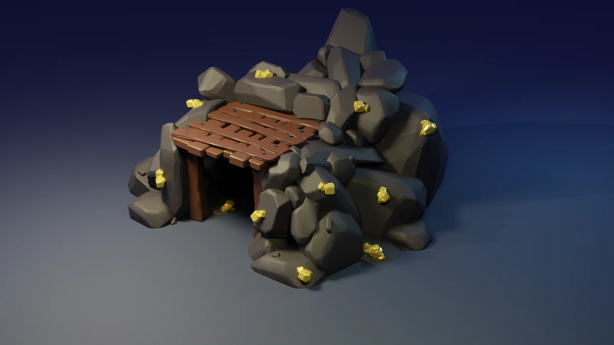
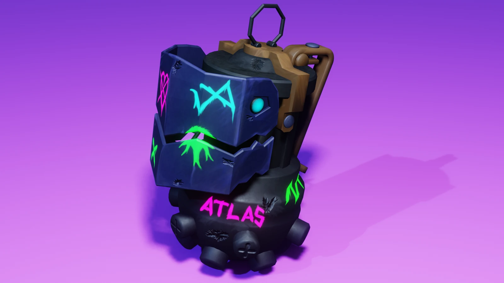
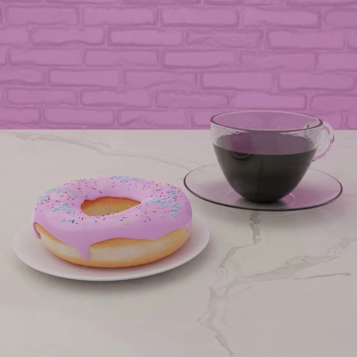
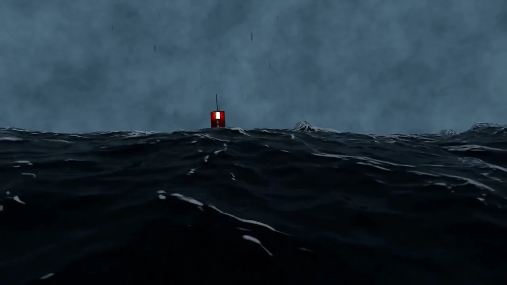

MOTION / 01Смотреть видео ↗EatMarket
AFTER EFFECTSРекламный баннер для EatMarket.
ПОРТФОЛИО / САНКТ-ПЕТЕРБУРГ
Привет, я Степан Парфентьев.
Занимался 3D-моделированием, моушен-дизайном и видеомонтажом, вёл социальные сети. Сейчас углубляюсь в работу с нейросетями: изучаю их возможности и применяю в собственных проектах. Мне интересно сочетать визуальное творчество с технологиями и находить новые способы воплощать идеи.

01 / В ДВИЖЕНИИ
Типографика, графика и анимация.
Четыре работы — четыре настроения.

MOTION / 01Смотреть видео ↗Рекламный баннер для EatMarket.

MOTION / 02Смотреть видео ↗Анимированная афиша лекции о Баухаусе.

MOTION / 03Смотреть видео ↗Анимационный баннер в неоновой стилистике.

MOTION / 04Смотреть видео ↗Презентационный ролик об учебных направлениях.
02 / В ОБЪЁМЕ
От небольших объектов
до целых сцен и анимации.

3D / СЦЕНАРассмотреть ↗Стилизованная сцена в low-poly эстетике.

3D / ОБЪЕКТРассмотреть ↗Игровая стилизация и яркие материалы.

3D / АНИМАЦИЯСмотреть видео ↗Предметная сцена в движении.

3D / АНИМАЦИЯСмотреть видео ↗Реалистичная 3D-графика.
03 / TELEGRAM-БОТ
Сервис знакомств
для студенческого сообщества.
РАЗРАБОТКА / ИНТЕГРАЦИЯ AI
Разработал бота, в котором студенты создают анкеты, находят друг друга и получают уведомления о взаимных симпатиях.
Для проверки пользователей и жалоб предусмотрен отдельный модераторский бот. Для общения с AI — интеграция GigaChat с историей диалога.
Учебный прототип в рамках дипломной работы.
Профили с фото, подбор анкет, лайки и взаимные симпатии.
Верификация пользователей, жалобы и отдельный бот для модераторов.
GigaChat: ответы на сообщения с учётом истории диалога.
04 / МОЙ ПУТЬ
Медиа, контент
и реальные задачи.
Ведение социальных сетей университета.
Просмотр и отбор материалов. Монтаж роликов на заданную тему.
Поиск и анализ информации. Работа с Яндекс Wordstat, ChatGPT и YandexGPT.
Работа редактором Telegram-канала.
05 / ЗНАНИЯ И ПРАКТИКА
Диплом с отличием
Информационные системы
и технологии
Профиль «Цифровые технологии в медиаиндустрии»
Техник-механик
Эксплуатация и ремонт сельскохозяйственной техники и оборудования
06 / ПРОДОЛЖАЮ УЧИТЬСЯ
Курсы, которые дополняют
практику.